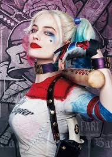
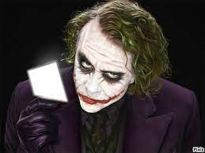

BATMAN
Bruce Wayne es el único personaje que se identifica como Batman y aparece en Batman, Detective Comics, Batman y Robin, y Batman: The Dark Knight. Dick Grayson vuelve al manto de Nightwing

HARLEY QUINN
Es un personaje ficticio creado por los estadounidenses Paul Dini y Bruce Timm para la editorial DC Comics. Quinn hizo su debut en el vigésimo-segundo episodio de Batman: la serie animada, «El favor del Joker».

JOKER
A veces traducido como Guasón o Comodín es un personaje creado por Bill Finger, Bob Kane y Jerry Robinson, fue introducido en el primer ejemplar del comic book Batman.